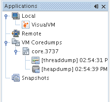
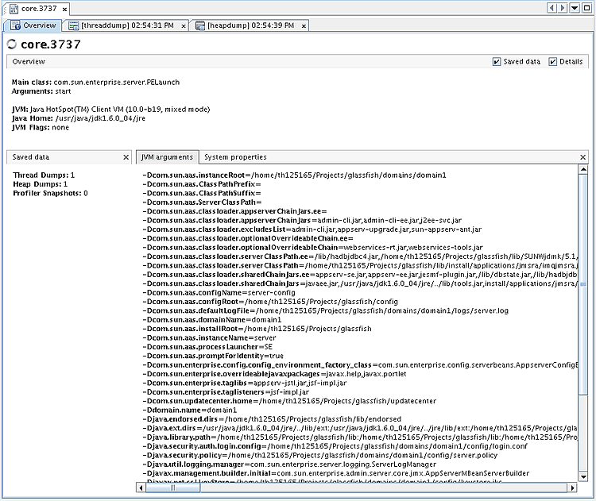
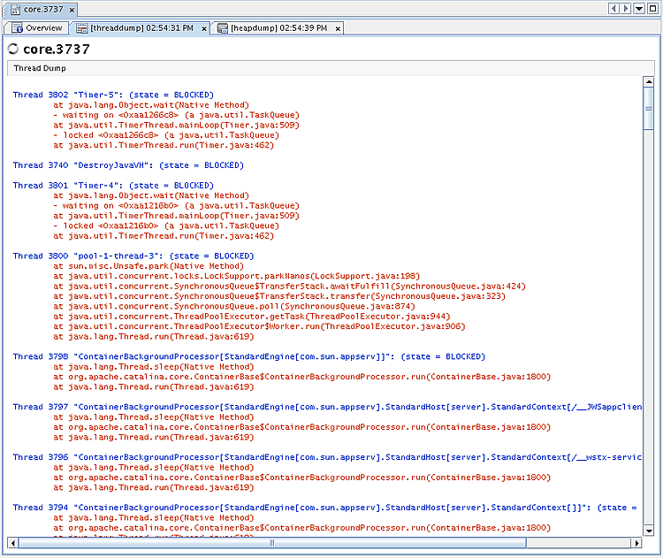

Когда вы запускаете VisualVM, слева в окне VisualVM видно окно Applications (Приложения). Окно Applications позволяет быстро просмотреть работающие локальные и удалённые приложения. В нём также отображаются core dumps (дампы ядра) и снимки профилирования (profiling snapshots), сохранённые на вашем компьютере.
Узел Core Dump (дамп ядра) виден в окне Applications, если VisualVM запущен на Solaris или Linux. Как правило, VisualVM может открыть core dump только если он был снят на той же машине. Core dump содержит сведения о JDK (Java Development Kit, комплект разработки Java) и ядре той машины, на которой он был создан. Чтобы открыть core dump в VisualVM, эти сведения должны совпадать с JDK и ядром локальной системы.
Core dump — это двоичный файл, в котором зафиксировано всё содержимое кучи (heap) в момент снятия дампа. Когда вы загружаете core dump в VisualVM, под узлом Core Dump появляется узел этого дампа.

Чтобы посмотреть обзор core dump, щёлкните правой кнопкой узел дампа и выберите Open (Открыть). (Либо дважды щёлкните узел.)

Можно щёлкнуть правой кнопкой узел core dump и выбрать Heap Dump (дамп кучи) или Thread Dump (дамп потоков), чтобы просмотреть дамп кучи и дамп потоков из этого core dump.

Затем дамп потоков и дамп кучи можно сохранить на локальный диск.
Return to the VisualVM Documentation index (вернуться к оглавлению документации VisualVM)